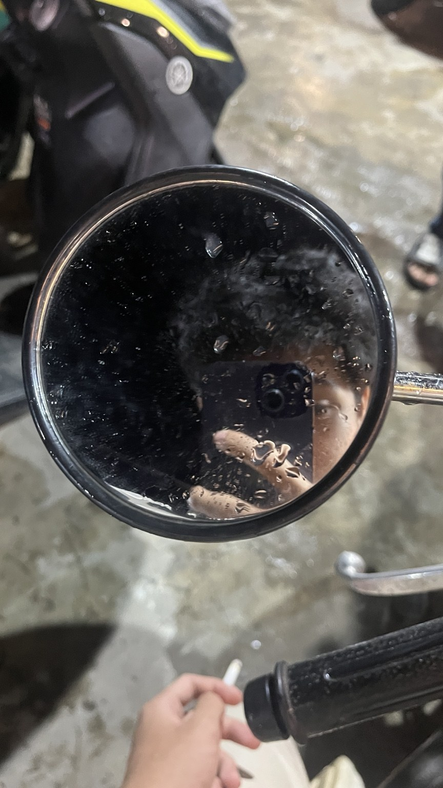

Personal website
Rohim
Kurniawan.
Just a simple guy dengan banyak mimpi. Masih belajar, masih berproses, and trying to be a better version of myself every day. No rush, no pressure, just enjoy the journey.
Still growing. Still becoming.
01 / About me
A little space about me.
Selamat datang di ruang kecil milik saya. Website ini menjadi tempat untuk memperkenalkan diri dan menyimpan perjalanan, cerita, serta hal-hal yang sedang saya kembangkan.
02 / My journey
One step at a time.
Everyone has their own timeline. Aku memilih untuk terus belajar, menikmati proses, dan melangkah dengan caraku sendiri.